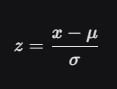
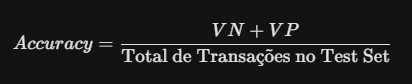
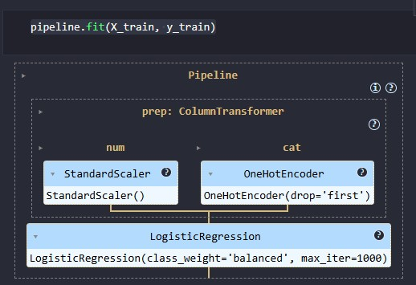

Descrição do Desafio
Projeto desenvolvido com Python para prever uma possível transação fraudulenta.
Bibliotecas
As ferramentas utilizadas no projeto foram:
- Pandas: Para manipulação e tratamento de dados;
- Scikit-learn (sklearn): Biblioteca utilizada para taredas de Aprendizado de Máquina (Machine Learning), incluindo Classificação, Regressão, entre outros;
- Streamlit: Facilita a construção da interface web;
- Joblib: Serialização do Pipeline de ML treinado para uso posterior no aplicativo web.
import pandas as pd
from sklearn.model_selection import train_test_split
from sklearn.linear_model import LogisticRegression
from sklearn.metrics import accuracy_score
import json
import itertools
import ast
import datetime
import streamlit as st
import pandas as pd
import joblib
Etapas do Projeto
O projeto foi divido em duas fases principais: Análise e Treinamento do Modelo (Jupyter Notebook) e Deployment com Streamlit.
-
Fase 1: Análise e Treinamento do Modelo (Jupyter Notebook)
O arquivo
analysis_model.ipynbcontém todo o código utilizado nessa primeira fase.
Base de Dados
Vou começar falando sobre a base de dados utilizadas, assim como no Projeto Pokémon em meu portfólio, este também utilizou uma base de dados vinda do Kaggle. Você pode dar uma olhada neste clicando neste link.
A base de dados é um arquivo no formato .CSV que contém dados referentes à análise de detecção de fraudes. Essa base de dados contém dados sobre o remetente (Origem) e o destinatário (Destino) das transações.
A base de dados contém muitas colunas, porém para este projeto especificamente, irei utilizar apenas algumas colunas. Veja abaixo quais colunas irei utilizar e o que cada uma dela armazena:
-
Type
Tipo de Dado: Categórica
Descrição: Tipo de transação, exemplo: Cash-out, Pagamento, Transferência, Depósito.
Uso no Projeto: Muito importante, visto que alguns tipos de transações fraudulentas possuem um tipo de transação favorito para aplicar os golpes. -
Amount
Tipo de Dado: Numérica
Descrição: Valor da transação em moeda local
Uso no Projeto: O valor da transação é um forte indicador de fraude. -
OldBalanceOrg
Tipo de Dado: Numérica
Descrição: Saldo inicial do remetente (Origem) antes da transação.
Uso no Projeto: Inidica a capacidade financeira do remetente. -
NewBalanceOrig
Tipo de Dado: Numérica
Descrição: Novo salodo do remetente (Origem) após a transação.
Uso no Projeto: Permite a validação de inconsistências de saldo. -
OldBalnceDest
Tipo de Dado: Numérica
Descrição: Saldo inicial do destinatário (Destino) antes da transação.
Uso no Projeto: Ajuda a identificar contas destino com saldos suspeitos. -
NewBalanceDest
Tipo de Dado: Numérica
Descrição: Novo saldo do destinatário (Destino) após a transação.
Uso no Projeto: Completa a verificação de saldos. -
isFraud
Tipo de Dado: Binário (Target)
Descrição: 1- Indica que a transação é fraudulenta -- 0- Indica que a transação é legítima.
Uso no Projeto: Usada para treinar e avaliar a precisão do modelo.
Mas o que significa cada um desses tipos de dados?
Dado Categórico
Dados categóricos representam qualidades, rótulos ou grupos.. Eles não possuem um valor intrinsecamente numérico ou uma ordem matemática.
Características
Não são quantitativos: Não é possível realizar operações matemáticas com eles de forma significativa.
Representam Classes: Os valores pertencem a um conjunto finito de categorias.
Tipos comuns
-
Tipo de Categoria: Nominal
Descrição: Categorias sem ordem ou hierarquia.
Uso no Projeto: Conteúdos da colunatype. Não há ordem entre eles. -
Tipo de Categoria: Ordinal
Descrição: Categorias que possuem uma ordem ou classificação natural.
Exemplo de Uso: Nível de satisfação do cliente: "Baixo", "Médio" ou "Alto".
Dado Numérico
Dados numéricos ou quantitativos, representam quantidades, medidas ou contagens e podem ser submetidos a operações matemáicas.
Características
Quantitativos: Têm valor e significado numérico.
Escala e Ordem: Os valores têm uma ordem clara e a diferença entre eles é significativa.
Tipos comuns
-
Tipo Numérico: Contínuo
Descrição: Valores que podem assumir qualquer valor dentro de um intervalo, incluindo casas decimais.
Uso no Projeto:amount(Quantia da Transação),OldBalanceOrg(Saldos). -
Tipo Numérico: Discreto
Descrição: Valores que são contagens e só podem assumir números inteiros
Exemplo de Uso: Número de filhos, número de acessos a um site.
Dado Binário
São um caso especial de dado categórico (nominal) onde existem apenas duas categorias possíveis.
Características
Duas Classes: Os valores são mutuamente exclusivos (sim/não, verdadeiro/falso, 0/1).
Variável Alvo: Em ML, são frequentemente usados como a variável que o modelo tenta prever (variável target ou alvo) em problemas de classificação binária.
No projeto o dado binário pode ser encontrado por exemplo na base de dados na coluna
isFraud, onde se igual a 1 indica transação fraudulenta e, se igual a 0 indica transação legítima.Agora que entendemos como a base de dados está estruturada, vamos seguir com a preparação dos dados para o treinamento do modelo.
Pré-processamento e Pipeline
Essa etapa é o core de todo Projeto de ML. É aqui que os dados brutos são transformados em algo que o modelo consegue aprender e garante que a aplicação Streamlit funcione corretamente em produção.
Mas...
O que é e como funciona o pré-processamento dos dados?Basicamente é um conjunto de técnicas aplicadas aos dados brutos para prepará-los antes de serem utilizados no treinamento de um modelo de Machine Learning.
O objetivo aqui é garantir que os dados de entrada estejam no formato, escala e qualidade ideias para otimizar o aprendizado e a precisão do modelo.
Meu projeto foca em duas transformações essenciais:
-
Transformação de Dados Categóricos (Encoding)
Ação:
Lida com a feature
Problema:type(Pagemento, Transferência, Cash_Out, Depósito).Modelos de ML só entendem números, se for passado a palavra "TRANSFERÊNCIA" diretamente, o modelo não saberá como interpretá-lo.
Solução:One-Hot Encoding (usando o
OneHotEncoderdo Scikit-learn).-
Cria colunas para cada tipo.
-
Exemplo: Uma transação de "TRANSFERÊNCIA" terá 1 na coluna
type_TRANSFERENCIAe 0 nas demais colunas de tipo.
-
-
Escalonamento de Dados Numéricos (Scaling)
Ação:
Lida com as features numéricas como
Problema:amount, oldbalanceOrg, newbalanceOrig, OldbalanceDest, newbalanceDest.O valor da
Solução:amountpode ser de R$ 100,00 ou R$ 1.000.000,00, uma diferença enorme. Sem escalonamento, o modelo pode dar peso indevido a features com maior magnitude.Standard Scaling (usando o
StandardScalerdo Scikit-learn).-
Esse método padroniza os dados, subtraindo a média e dividindo pelo desvio padrão (Z-score).
-
Resultado: Todas as features numéricas são reescaladas para ter média zero e desvio-padrão um, garantindo que o modelo trate todas elas com a mesma importância em termos de escala.
-
O Conceito de Pipeline (No Scikit-learn)
O Pipeline é uma ferramenta do Scikit-learn que permite sequenciar várias etapas de processamento de dados e o modelo final em um único objeto coerente.
O arquivo
fraud_detection_pipeline.pklé esse objeto serializado.
Vantagens Chave do Pipeline
A. Prevenção de Vazamento de Dados (Data Leakage)O Pipeline garante que as transformações sejam calculadas apenas nos dados de treinamento e aplicadas consistentemente nos dados de teste e de produção. Isso evita o vazamento de informações do conjunto de teste para o conjunto de treinamento, o que inflaria artificialmente a precisão do seu modelo.
B. Organização e Reutilização (MLOps)Essa é a maior vantagem na etapa de Deployment:
-
Treinamento:
Você treina o pipeline inteiro em uma única chamada (
pipeline.fit(X_train, y_train)), e ele aprende automaticamente os parâmetros de codificação. -
Deployment:
Você salva o pipeline inteiro (incluindo o pré-processamento e o modelo treinado) em um único arquivo (
fraud_detection_pipeline.pkl) usando ojoblib.dump(). -
App Streamlit:
O script
fraud_detection.pycarrega este único arquivo comjoblib.load(). Quando o usuário insere novos dados, simplesmente chamopipeline.predict(input_data), e o pipeline aplica exatamente as mesmas transformações aprendidas no treinamento antes de passar os dados para o modelo.
Arquitetura do Pipeline (ColumnTransformer)O Pipeline utiliza o
ColumnTransformerpara lidar com colunas de diferentes tipos de dados simultaneamente:-
ColumnTransformer:
Aplica o
StandardScalerapenas nas colunas numéricas (amount, oldbalanceOrg, ...). -
Transformador 'num':
Aplica o
OneHotEncoderapenas na coluna categórica (type). -
Modelo Final:
Após as colunas serem transformadas e combinadas, o Pipeline passa o resultado para o algoritmo de classificação para a previsão final.
Recursos Numéricos
O
O que o StandardScaler faz?StandardScaleré uma técnica de scaling crucial para as colunas que representam valores monetários e saldos na base de dados:amount, oldbalanceOrg, newbalanceOrig, oldbalanceDest, newbalanceDest.O objetivo é padronizar a distribuição dos dados de forma que eles tenham:
- Média (μ) igual a zero.
- Desvio-padrão (σ) igual a um.
Ele realiza essa transformação aplicando a fórmula abaixo a cada ponto de dados (𝑥).
Onde:
- 𝑥 é o valor original da feature.
- μ é a média dessa feature calculada no conjunto de treinamento.
- σ é o desvio-padrão dessa feature calculado no conjunto de treinamento.
Mas...
O que são Features afinal?É uma variável individual mensurável que pode ser utilizada para descrever o fenômeno a ser analisado ou previsto. Basicamente, é uma coluna na base de dados utilizada. Como se trata das informações armazenadas na base de dados, quanto melhor a qualidade das informações, melhor é o resultado final.
Por que usar o StandardScaler?
A. Evitar que Features Maiores DominemFeatures numéricas têm magnitudes bem diferentes.
Modelos baseados em distância, como por exemplo Regressão Logística, K-Nearest Neighbors, Support Vector Machines, entre outros, são sensíveis à escala. Se uma feature tem valores de 10.000 a 1.000.000 e outra de 1 a 10, o modelo terá uma tendência a dar um peso muito maior à feature com os valores maiores.
Ao padronizar os dados, estamos garantindo que a importância de uma feature no modelo seja determinada pela sua relevância preditiva, e não simplesmente pelo tamanho dos seus valores.
B. Otimização do AlgoritmoA padronização dos dados melhora a convergência e a velocidade de treinamento de muitos algoritmos de ML, especialmente aqueles que usam otimização baseada em gradiente, como Regressão Logística e Redes Neurais.
Recursos Categóricos
O
O que o OneHotEncoder faz?OneHotEncoderé a técnica padrão para transformar dados categóricos nominais (que não possuem ordem) em um formato que o modelo de Machine Learning consegue processar numericamente.O codificador pega a coluna categórica e a divide em várias colunas binárias, uma para cada categoria única presente nos dados de treinamento.
Exemplo
Por que usar o OneHotEncoder?Transação | type (Original) | type_TRANSFERÊNCIA | type_PAGAMENTO | type_CASH_OUT | type_DEPÓSITO A TRANSFERÊNCIA 1 0 0 0 B PAGAMENTO 0 1 0 0 C, CASH_OUT 0 0 1 0
A. Impedir o Reconhecimento de OrdemSe tentarmos codificar TRANSFERÊNCIA como 1, PAGAMENTO como 2, CASH_OUT como 3, etc (uma técnica chamada Label Encoding), estaríamos implicitamente ensinando o modelo que a transação 3 é maior ou tem uma ordem mais alta que a transação 1.
Como as categorias de transação não têm uma ordem inerente, essa codificação falsa iria distorcer o aprendizado do modelo. Por isso o One-Hot Encoding resolve isso. Ele garante que cada categoria seja tratada como um atributo independente.
B. Indicar a Presença (ou Ausência)Quando criamos colunas binárias, o modelo pode aprender que um valor de "1" em
type_TRANSFERENCIAtem uma relação específica com o rótuloisFraud = 1, enquanto um valor "1" emtype_PAGAMENTOpode ter uma correlação comisFraud = 0. Essa é a forma mais eficaz de extrair poder preditivo de features categóricas.
Treinamento do Modelo
O treinamento é o processo pelo qual o algoritmo de ML examina o conjunto de dados do treino, ajustando seus parâmetros internos para encontrar o padrão que melhor relaciona as features à variável alvo.
Fases do treinamento:
A. Divisão de Dados (Train-Test-Split)Antes de treinar, o conjunto de dados original é dividido em duas partes essenciais:
-
1. Conjunto de Treinamento (Train Set):
A maior parte dos dados (ex.: 70% ou 80%) que o modelo usa para aprender padrões.
-
2. Conjunto de Teste (Test Set):
A porção de dados (ex.: 20% ou 30%) que o modelo nunca vê durante o treinamento. Ele é reservado para a fase de avaliação, garantindo um teste imparcial da performance do modelo.
O comando central dessa fase é:
pipeline.fit(X_train, y_train):-
O pipeline executa o pré-processamento (aplicando o
StandardScalereOneHotEncoder) nos dados de treinamento (X_train). -
Os dados transformados são então enviados ao algoritmo de ML.
- O modelo usa o rótulo verdadeiro (
y_train, a colunaisFraud) para ajustar seus pesos, aprendendo a distiguintes entre transações fraudulentas e legítimas.
Avaliação do Modelo
A avaliação é a etapa de verificação, onde usamos o conjunto de dados novos para saber o quão bem o modelo aprendeu.
A. Geração de PrediçõesO modelo é solicitado a fazer previsões nos dados de teste (
y_pred = pipeline.predict(X_test)).-
O pipeline aplica as mesmas transformações aprendidas no treinamento aos dados de teste (
X_test). -
O modelo gera um rótulo previsto (
y_pred) para cada transação no conjunto de teste.
É a primeira e mais importante ferramenta de avaliação. Ela compara as previsões do modelo (
y_pred) com os resultados reais (y_test).-
Categoria:
Previsto Negativo
Real Negativo (Legítimo)
Verdadeiro Negativo (VN): Transações legítimas corretamente identificadas.
Real Positivo (Fraude)
Falso Negativo (FN): O erro mais perigoso. Transações de fraude que o modelo perdeu.
-
Categoria:
Previsto Positivo
Falso Positivo (FP):
Transações legítimas classificadas incorretamente como fraude.
Real Positivo (Fraude):
Verdadeiro Positivo (VP): Transações de fraude corretamente identificadas.
A precisão (Accuracy) é a métrica que mede a proporção total de previsões corretas feitas por um modelo em relação ao número total de casos avaliados.
Este projeto possui acurácia de 94,71%.
Fórmula:

O que isso significa?No conjunto de dados de teste (que o modelo nunca viu), ele classificou corretamente 94,71% das transações.
Consideração Crítica para Fraude (Imbalance)Em um problema de detecção de fraude, a acurácia é uma métrica importante, porém não é a única. Como o dataset é desequilibrado, é importantíssimo analisar:
-
1. Recall (Sensibilidade):
Qual a porcentagem de todas as fraudes reais que o modelos conseguiu detectar? (Minimizar Falsos Negativos)
-
2. Precision:
Quando o modelo diz que é fraude, qual a chance de ele estar certo? (Minimizar Falsos Positivos)
Um projeto de boa qualidade sempre precisa balancear a Acurácia com o Recall para garantir que as fraudes perigosas (FN) sejam minimizadas, mesmo que isso signifique aceitar um pequeno aumento nos alertas falsos (FP).
Salvamento do Pipeline
O salvamento do pipeline é ação de seializar o objeto Python completo do Scikit-learn que contém todas as regras do modelo treinado em um único arquivo binário (
.pklou.joblib).joblib.dump(pipeline, "fraud_detection_pipeline.pkl")Este código resulta na criação do arquivo Pickle, um arquivo que permite converter objetos complexos da memória (como modelos inteiros do Scikit-learn) em um fluxo de bytes que pode ser salvo, carregado e recuperado em disco sem a necessidade de retreinar o modelo.
1. O que exatamente está sendo salvo?Quando o objeto pipeline é salvo, não está sendo salvo apenas o código python, mas sim tdodo o aprendizado de máquina do modelo e das regras de transformação:
-
Componente salvo:
StandardScaler
Conteúdo Específico:Média (μ) e Desvio-padrão (σ) calculados em cada coluna numérica do conjunto de treino.
Função na Previsão:Garante que os novos dados inseridos no Streamlite sejam escalonados exatamente com a mesma referência usada no treinamento.
-
Componente Salvo:
OneHotEncoder
Conteúdo Específico:A lista exata de categorias vistas na coluna
Função na Previsão:type.Garante que o input do Streamlit seja codificado nas mesmas colunas que o modelo espera, tratando uma "TRANSFERÊNCIA" nova da mesma forma que a "TRANSFERÊNCIA" de treino.
-
Componente Salvo:
Modelo de Classificação
Conteúdo Específico:Os pesos (parâmetros) finais que o modelo ajustou durante o treinamento para fazer a classificação.
Função na Previsão:É o código que efetivamente toma a decisão final de previsão.
2. A ferramenta:joblibUtilizei a biblioteca
Por que não utilizei a bibliotecajoblibpara serialização.pickle?-
joblibé o método indicado para serializar objetos que contém muitos arrays de dados (como os pesos do modelo e dados internos do StandardScaler), porque é mais eficiente para objetos que contêm dados NumPy grandes, como é o caso dos modelos do Scikit-learn.
3. A importância estratégica (MLOps)O salvamento do pipeline é a etapa de MLOps que torna um projeto de ML realmente funcional e possível de colocar em produção.
A. Garantia de Consistência (End-to-End)Se as etapas de treinamento do modelo, o pré-processamento e o salvamento do modelo fossem salvos separadamente, haveria o risco de algo não ser aplicado corretamene no Streamlit.
Salvando o Pipeline estou garantindo que a previsão do modelo é gerada pela aplicação do pré-processamento corretamente seguido do modelo treinado.

B. Simplificação do DeploymentA aplicação Streamlit (
fraud_detection.py) possui o código necessário para colcar o modelo no ar.Na Fase 2 irei falar um pouco mais detalhadamente sobre o deployment. Você pode pular clicando neste link.
-
-
Código de Treinamento do Modelo
Sempre costumo iniciar minhas análises exploratórias verificando o tipo de cada uma das colunas da base de dados.
df.info()class 'pandas.core.frame.DataFrame' RangeIndex: 6362620 entries, 0 to 6362619 Data columns (total 11 columns): # Column Dtype --- ------ ----- 0 step int64 1 type object 2 amount float64 3 nameOrig object 4 oldbalanceOrg float64 5 newbalanceOrig float64 6 nameDest object 7 oldbalanceDest float64 8 newbalanceDest float64 9 isFraud int64 10 isFlaggedFraud int64 dtypes: float64(5), int64(3), object(3)
Sigo validando o nome de cada coluna.
df.columnsIndex(['step', 'type', 'amount', 'nameOrig', 'oldbalanceOrg', 'newbalanceOrig', 'nameDest', 'oldbalanceDest', 'newbalanceDest', 'isFraud', 'isFlaggedFraud'], dtype='object')
Quantidade de conteúdo na coluna alvo.
df["isFraud"]: Seleciona a variável alvo do DataFrame..value_counts(): retorna uma Série que contém a contagem de ocorrências de valores únicos na coluna.
df["isFraud"].value_counts()isFraud 0 6354407 1 8213 Name: count, dtype: int64
Três métodos aplicados em sequência com o objetivo de retornar o número total de valores nulos.
.isnull(): Aplicado em todo o DataFrame e transforma o DataFrame em um novo DataFrame com valores booleanos, onde o valor original era NaN, o resultado é True, e, onde o valor original era válido, o resulado é False..sum()(Primeira Soma): Aplicado apenas nas colunas do DataFrame booleano. Ao somar valores booleanos, True é tratado como 1 e False é tratado como 0..sum()(Segunda Soma): Aplicado apenas na Série resultante da soma anterior. Todos os valores da Série são somados e apresentados em apenas um único número inteiro que representa
df.isnull().sum().sum()np.int64(0)
.shapeé um atributo que retorna uma tupla informando a quantidade de linhas e de colunas respectivamente.df.shape(6362620, 11)
O código abaixo calcula a porcentagem exata de fraudes no conjunto de dados.
round((df["isFraud"].value_counts()[1] / df.shape[0]) * 100,2)np.float64(0.13)Vou destrinchar o código acima:
-
df["isFraud"].value_counts()[1]-
.value_counts():A função conta quantas vezes 0 e 1 aparecem.
-
[1]:Aqui eu acesso especificamente a contagem do índice 1, ou seja, estou isolando apenas o número total de casos de fraude.
-
-
df.shape[0]-
shape:Retorna a quantidade de linhas e colunas.
-
[0]:Pego o primeiro valor da tupla, que é o número total de registros no DataFrame.
-
-
(df["isFraud"].value_counts()[1] / df.shape[0]) * 100- Aqui estou fazendo um cálculo: (Total de Fraudes / Total de Transações) * 100.
Isso transforma a proporção decimal em uma porcentagem.
- Aqui estou fazendo um cálculo: (Total de Fraudes / Total de Transações) * 100.
-
round(..., 2)-
round():Função padrão do Python para arredondamento de valores.
-
2:Indico que o resultado deve conter apenas duas casas decimais.
-
Agora quero visualizar algumas informações
df["type"].value_counts().plot(kind="bar", title="Tipos de Transação", color="skyblue") plt.xlabel("Tipo de transação") plt.ylabel("Quantidade") plt.show()Vou destrinchar o código:
-
df["type"].value_counts().plot(kind="bar", title="Tipos de Transação", color="skyblue"):-
.plot()O comando indica que deverá ser apresentado um gráfico.
-
kind = "bar"Aqui estou indicando que o gráfico deve ser no formato de Barras.
-
title = "Tipos de TransaçãoIndico o título do gráfico
-
color = "skyblue"Indico qual a cor das barras no gráfico.
Mas, além de indicar que quero ver um gráfico, preciso adicionar argumentos dentro dessa função para que apresentação fique como espero:
-
-
plt.xlabel("Tipo de transação")
plt.ylabel("Quantidade")- Funções vindas da biblioteca
matplotlib.pyplotadicionam legendas aos eixos X e Y.
- Funções vindas da biblioteca
-
plt.show()Essa função limpa as informações de log do sistema e exibe apenas a figura final na tela evitando que apareçam textos técnicos em cima do gráfico.
Além de analisar a quantidade de transações, quero ver a taxa de periculosidade para cada tipo de operação.
fraude_por_tipo = df.groupby("type")["isFraud"].mean().sort_values(ascending=False) fraude_por_tipo.plot(kind="bar", title="Percentual de Fraude por Tipo", color="salmon") plt.ylabel("Percentual de Fraude por Tipo") plt.show()Vou destrinchar o código:
-
groupby() e mean()
fraude_por_tipo = df.groupby("type")
["isFraud"].mean().sort_values(ascending=False)O cálculo gira em torno dessas duas funções e faz três coisas fundamentais:
-
df.groupby("type"):Essa função tem o objetivo de dividir a coluna filtrando suas informações em grupos, por exemplo: (PAGAMENTO, TRANSFERÊNCIA, etc.)
-
["isFraud"].mean()A coluna
isFraudsó contém os valores 0 e 1. Calcular a média é o mesmo que calcular a proporção de fraudes.-
Por exemplo:
Se em 100 transações de 'TRANSFERÊNCIA', 10 forem fraudes, a média será $10/100 = 0.10$ (ou 10% de taxa de fraude).
-
Por exemplo:
-
.sort_values(ascending=False)A função organiza os resultados do maior para o menor, dessa forma, os tipos de transação mais perigosos ficam no topo da lista.
-
-
fraude_por_tipo.plot(kind="bar", title="Percentual de Fraude por Tipo", color="salmon")Novamente tenho o objetivo de apresentar um gráfico de barras na tela
-
Fase 2: Deployment com Streamlit
Antes de avançar para a Fase 2 do projeto, veja abaixo a explicação do código utilizado para o treinamento do modelo de ML.
Caso queira pular essa parte, pode ir direto para a Fase 2.